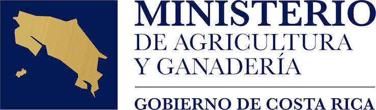

AGRI Lab 506: Innovación, liderazgo y emprendimiento para las juventudes del agro
Una iniciativa del MAG, INA e IICA para impulsar una nueva generación de jóvenes capaces de transformar el agro costarricense mediante innovación, tecnología y acción.
¿Qué es AGRI Lab 506?
Costa Rica enfrenta un importante desafío generacional en el sector agropecuario. La edad promedio de los productores supera los 60 años y cada vez menos jóvenes visualizan el agro como una opción para desarrollarse profesionalmente, emprender o generar oportunidades en sus comunidades.
Al mismo tiempo, el sector requiere nuevas capacidades para afrontar retos relacionados con la productividad, la innovación, la sostenibilidad, el uso de tecnologías digitales y la adaptación al cambio climático.
AGRI Lab 506 surge como una respuesta a este desafío. Es una plataforma de formación, innovación y articulación impulsada por el Ministerio de Agricultura y Ganadería (MAG), el Instituto Nacional de Aprendizaje (INA) y el Instituto Interamericano de Cooperación para la Agricultura (IICA), orientada a fortalecer las capacidades de las juventudes rurales y agroalimentarias mediante experiencias prácticas, aprendizaje aplicado y conexión con el ecosistema de innovación del país.
Más que un programa de capacitación, AGRI Lab 506 busca crear una comunidad de jóvenes capaces de identificar oportunidades, desarrollar soluciones, impulsar emprendimientos y convertirse en agentes de transformación en sus territorios.
Conoce más sobre la experiencia AGRI Lab 506
¿Qué ofrece AGRI Lab 506?
Impulsando el desarrollo integral de las juventudes del campo y la ciudad
Inspiración y Liderazgo
Espacios para conocer experiencias exitosas, tendencias, tecnologías emergentes y oportunidades para las nuevas generaciones del agro.
Innovación y Desarrollo de Soluciones
Metodologías prácticas para identificar retos del sector y diseñar soluciones con impacto en la productividad, sostenibilidad y competitividad.
Emprendimiento y Creación de Oportunidades
Herramientas para fortalecer ideas, desarrollar proyectos y conectar con oportunidades de crecimiento dentro del ecosistema agroalimentario.
Articulación y Redes
Vinculación con instituciones, organizaciones, empresas, centros de conocimiento y actores que apoyan el desarrollo de iniciativas lideradas por jóvenes.
¿Quiénes pueden participar?
AGRI Lab 506 está dirigido a jóvenes entre los 15 y 35 años de todo Costa Rica que tengan interés en el sector agropecuario y agroalimentario.
- Estudiantes universitarios y de colegios técnicos.
- Productores y productoras agrícolas y pecuarios.
- Emprendedores y creadores de proyectos rurales.
- Extensionistas y educadores del área rural.
- Integrantes de organizaciones y cooperativas rurales.
- Cualquier persona joven interesada en contribuir al futuro del agro costarricense.
El futuro del agro necesita nuevas ideas, nuevos liderazgos y nuevas soluciones. AGRI Lab 506 es un espacio para aprender, innovar, emprender y construir ese futuro juntos.
— Equipo AGRI Lab 506 Costa RicaPróximas Actividades
Acompáñanos en nuestras jornadas de capacitación y laboratorios de ideación
| Fecha | Actividad | Estado / Inscripción |
|---|---|---|
| 17 Agosto 2026 |
AGRI Talk
Conversatorio virtual con jóvenes líderes de la innovación agrotecnológica regional. |
Inscribirse |
| Próximamente |
Taller de Innovación
Sesión práctica de diseño de soluciones para retos agropecuarios territoriales. |
Pronto a abrir |
| Próximamente |
Laboratorio de Ideas
Hackatón agrotech para la formulación de prototipos y modelos de negocio rurales. |
Pronto a abrir |
Noticias y Novedades
Mantente al día con los avances e historias del AGRI Lab 506
 01 Ago 2026
01 Ago 2026
MAG, INA e IICA oficializan la iniciativa AGRI Lab 506
Se lanza la plataforma interinstitucional que promoverá el relevo generacional y la innovación técnica entre las juventudes rurales costarricenses.
Leer noticia completa 10 Jul 2026
10 Jul 2026
Jóvenes rurales lideran adopción de tecnologías agrotech
Experiencias demostrativas comprueban la viabilidad de incorporar sensores IoT y herramientas digitales en pequeñas fincas productivas.
Leer noticia completa 25 Jun 2026
25 Jun 2026
Abierta convocatoria para talleres de prototipado rápido
Estudiantes y jóvenes productores podrán inscribirse en los programas intensivos de capacitación práctica para el segundo semestre.
Leer noticia completaImpulsado e Integrado por
